Babble-rnn: Generating speech from speech with LSTM networks
Phil Ayres
phil.ayres@consected.com
25 May 2017
There is plenty of interest in recurrent neural networks (RNNs) for the generation of data that is meaningful, and even fascinating to humans. Popular examples generate everything from credible (but fabricated) passages from Shakespeare, incredible (but highly likely) fake-news clickbait, to completely simulated handwritten sentences that shadow the style of the original writer.
These examples by prominent authors have helped many people, including myself, to see that there is more to deep-learning than just recognising cats and dogs in social media photos:
- The Unreasonable Effectiveness of Recurrent Neural Networks
Andrej Karpathy - Generating Sequences With Recurrent Neural Networks
Alex Graves - Auto-Generating Clickbait With Recurrent Neural Networks
Lars Eidnes
Such compelling examples demonstrate the power of recurrent neural networks for modelling human generated data, and recreating completely new data from those models. They can be understood by anybody, humanising the world of “AI”.
Inspired, Consected, sponsored research into the use of machine learning to generate new speech by modelling human speech audio, without any intermediate text or word representations. The idea is to learn to speak through imitation, much like a baby might. The goal is to generate a babbling audio output that emulates the speech patterns of the original speaker, ideally incorporating real words into the output.
A requirement of this project is to evaluate the use of commonly researched neural network architectures that can be implemented directly with the Keras toolkit. Rather than merely being a simple implementation of existing research, our project investigates the use of an alternative form of audio encoding, which we are not aware of being used previously in machine learning. We also trial various training regimes to attempt to achieve faster or improved convergence of the model.
Of course, the source code for the networks, generated models, plus Jupyter / iPython notebooks acting as a training / testing dashboard are provided for reference.
If you want to skip the details and just hear the results, jump to Additional Generated Audio
Audio Generation Research
The existing research we have found related to audio generation with RNNs has provided some background to the problem and possible neural network architectures. These papers have taken various approaches to the actual representation of audio data or are focused on a more traditional text-to-speech problem. Key references are:
- Generating sound with recurrent neural networks
John Glover - Acoustic Modeling in Statistical Parametric Speech Synthesis - from HMM to LSTM-RNN
Heiga Zen - Deep Neural Networks for Acoustic Modeling in Speech Recognition
Geoffrey Hinton, Li Deng, Dong Yu, George Dahl, Abdel-rahman Mohamed, Navdeep Jaitly, Andrew Senior, Vincent Vanhoucke, Patrick Nguyen, Tara Sainath, and Brian Kingsbury - GRUV:Algorithmic Music Generation using Recurrent Neural Networks
Aren Nayebi and Matt Vitelli
Note: a list of all references appears towards the end of this document
Encoding Audio
A significant hurdle in the generation of audio by a neural network is the learning of audio sequences over significant periods of time, when faced with the amount of data required to represent a coherent audio sequence.
When attempting to learn a model with a wide-spectrum waveform (CD quality) directly from the pulse coded modulation (PCM) digitised representation of the audio, the network would be required to learn a sequence of 44,100 samples of 16-bit data for a single second of audio. Add to this the desire to generate more than just a short burst of audio, and raw digitised audio data seems like an unrealistic source for learning. Surprisingly, Nayebi and Vitelli suggest that their GRUV network could generate some coherent audio despite this.
John Glover took a potentially more feasible approach when generating musical instrument sounds, by relying on a Phase Vocoder representing audio as short-time Fourier transforms. This represents the audio data in a significantly compressed form, reducing the length of sequences to be learned significantly. My observation would be that this is potentially a more meaningful audio representation. Rather than pushing continuous amplitude variations (which are highly affected by volume, noise and timing for even simple waveforms) directly into an RNN, sets of frequency and phase values are instead used. I look at this as the difference between an RNN learning and generating text using ASCII characters, rather than attempting to model raw bit streams from the text corpus.
For our research, I was hoping to rely on a more specialised encoder, specifically focused on speech data. Initially I considered the GSM “mobile phone” standard, recalling that its compression was based on vocal tract modelling. Looking at the GSM 06.10 “Full Rate Speech Transcoding” standard, I observed that the complexity of the codec was much greater than anticipated, and the data contained in each frame was less representative of a short segment of audio than expected.
This led my to search for other encoding approaches. I fortunately found Codec 2, an open source model for digitising speech audio for broadcast over HF/VHF and ham radio. The codec uses harmonic sinusoidal coding tuned to speech. In summary, it encodes a combination of primary pitch and energy of an audio frame, followed by related harmonics, plus some flags indicating voiced (vowels), or unvoiced (consonants). The codec importantly captures the fundamentals of vocal audio as individual parameters for short audio segments (see Codec 2 Data Frame for details).
A major appeal of Codec 2 is that the harmonic sinusoidal coding relates all encoded harmonic components back to the primary frequency. In this way, it is expected that similar phonetic sounds (phones being the more correct terminology) made by different speakers at different pitches are more likely to appear related in data.
Another appeal of Codec 2 for this research is that it utilises a vocal model for compression and a data representation that maintains the underlying audio components. In the 1300bps version of the codec a single 16 parameter frame represents 40ms of audio, such that just 25 frames are required per second (a rate of 'symbols' to be learned of approximately 1/1700 of 44.1kbps PCM), with more meaningful vocal representation. Based on this, it was assumed that an RNN could likely model audio sequences directly from the data, rather than requiring additional preprocessing or convolutional layers.
In order to validate the likelihood of the model making reasonable predictions from one frame to the next, a rapid analysis of Codec 2 Parameter Progression was made, to show the spread of parameters, delta from one frame to the next, and likely sensitivity to loss in the model.
Neural Network Architecture
The neural network architecture used in this project is quite common in the literature over the last few years. I selected it based on research of the most effective RNN architectures for sequence generation that can also be implemented using standard layers in the Keras toolset. Simply described, the network takes Codec 2 encoded audio as its input, and utilises three long short-term memory LSTM layers (ref: 10) with a final fully connected rectified linear unit (ReLU) layer. In the figure below showing the architecture, the top-most orange components are used only during generation of new speech samples.
predicted Codec 2 encoded audio
|
unscale Codec 2 frame data
|
output: 16 elements
|
[Dense 1: 16 ReLU units]
|
[LSTM 3]
|
[LSTM 2]
|
[LSTM 1]
|
input: 16 elements
|
scale Codec 2 frame data
|
Codec 2 encoded audio
Prior to training the network, the raw audio data is encoded as a Codec 2 file (MP3 to raw PCM having already been performed), where each frame of data consists of 16 parameters of one (unsigned) byte each. Scaling of the Codec 2 frames takes each parameter and scales it to a floating point number between 0 and 1, based on a constant scaling factor for each parameter. Each scaled frame of 16 values now represents a single timestep input to LSTM 1.
Since our network is attempting to return real values rather than being structured for classification tasks with a final softmax layer (ref: 11), it culminates in a single fully connected ReLU layer (named Dense 1) on the output of the three layers of LSTMs. ReLU was selected based on its relative simplicity, a good fit to the data (positive, real numbers) and successful application in previous research.
Training the Network
Various layer sizes, optimizers and training regimes were tested early on in the project. These included:
- one, two or three LSTM layers
- short or long LSTM layers
- GRU units
- optimisers including SGD, RMSprop, Adam
- multiple fully connected layers on top of the LSTM layers
- a fully connected layer in between each LSTM
- combinations of trainable and untrainable layers for several epochs
Three layers of LSTMs appears to be a common architecture for generator RNNs in the literature, and our preliminary testing confirmed this with medium-length LSTM layers. With a longer LSTM (320 units), two layers performed as effectively as three layers of 160 units. Short layers (40 units each) performed poorly, as did a rapid test with GRUs rather than LSTM units.
Similar to Graves, we found that it was necessary to train LSTM layers from the bottom up. Intuitively this allows the lowest level LSTM to achieve its own convergence rapidly, then allow the higher layers to build off of this. Attempting to train all three LSTMs simultaneously led to a sub-optimal model.
Our eventual regime trained LSTM 1 for 60 epochs, LSTM 1 and LSTM 2 for the next 180 epochs, and LSTM 3 only thereafter. The number of epochs selected for each breakpoint was based purely on observation of loss during initial tests. In future research we might evaluate this approach in more detail
The optimiser we found most appropriate was Nadam, the version of Adam with Nesterov momentum (ref: 12). This optimiser allowed us to focus on adjusting other architectural variables, rather than fine tuning the learning rate hyperparameter.
Losses measured during learning were handled by scaling each Codec 2 parameter back to its real scale prior to loss calculation. This allowed a one bit error in fundamental frequency (W0) for example to be considered equivalent in impact to a one bit error in a “voiced” flag, rather than 1/128 if measuring loss on the 0-1 scaled data.
Corpus
Training our network only requires an extended set of clear speech, and does not need other tagging or classification. Verkaro Audiobooks was the source of our corpus: A Tale of Two Cities. A narration with a female voice was selected, in order to be clearer under heavy compression.
The chapters were concatenated to provide about 16 hours of speech from a single performer. The audio was converted to 8kbps 16-bit raw PCM data prior to Codec 2 encoding. The total length is approximately 1.5 million 16 byte Codec 2 frames after conversion.
Training used a batch length of 200 frames, equivalent to 8 seconds of speech, overlapping so that batches were picked starting every 20 frames.
Sample Generation
The proof of the performance of the babble-rnn is less about the measured loss and more in the observed quality of audio produced. Sample generation uses feed-forward of the network, a frame at a time, based on the Keras example LSTM text generation procedure:
- a seed sequence is passed to the network, and a prediction sample is returned
- the seed sequence is updated to append the new sample and push the initial value out of the list, maintaining a constant length
- the new sequence is passed as the seed to the network
- the procedure is repeated until a desired length has been fulfilled
Since the network prediction returns a full Codec 2 frame as the 16 output values, the network effectively generates 40ms of audio per sample.
Results
We generate 400 samples per test periodically through the training process. To evaluate performance we view both charts of Codec 2 data and PCM waveforms, and listen to generated audio. From an audible perspective we are looking for generated audio that follow the pace of the original narration, a natural pitch inflection and some proximity of tonal sequences to real words.
The overall loss the model converges to while learning is not entirely meaningful (there is no ‘correct’ answer); despite this the results are interesting. The best mean absolute error per frame we achieved is close to 0.15 at best. Intuitively this suggests that next sample predictions are close to the required fundamental frequency, harmonics and voicing, since each frame parameter is an integer.
Unfortunately, short LSTMs (40 units each) appear to be unable to converge on a meaningful result, instead producing a frame sequence of one continuous pitch, or a pulsating tone. Intuitively, the lowest LSTM layer may be unable to model sufficient variation in frame sequences, settling instead on a generalised but insufficiently complex output.
Medium sized LSTMs (160 units) converge on a mean absolute loss of about 0.55.

The audio generated does manage to achieve some structure that has sequences of roughly word length. The pitch was variable and vaguely natural. Overfitting does not appear to be an issue.
Note: in the following examples, the initial 64000 samples (8 seconds of audio or 200 Codec 2 frames) are the seed sequence, included for reference. A plot of the generated audio waveform, and scaled plot of Codec 2 frame parameters are also shown to highlight the data being generated.
 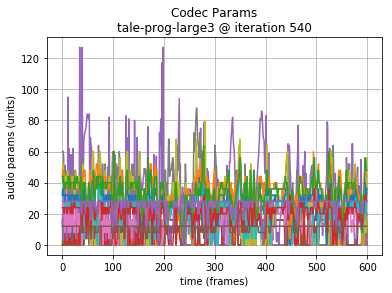
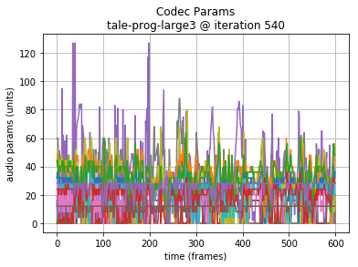
Since training is performed from lowest to highest layers, it is instructive to also hear the results earlier in the training.
First layer trained:
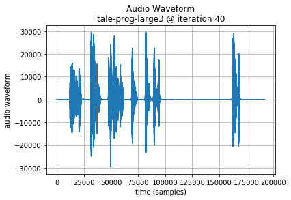
Second layer trained:
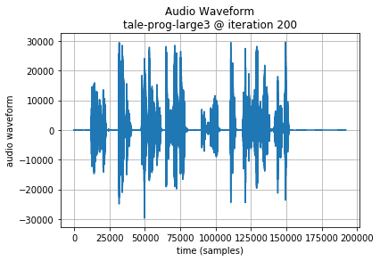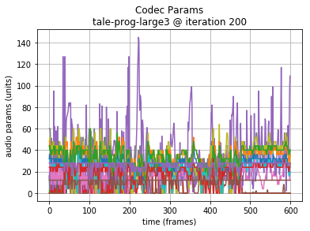
Long LSTMs (320 units) converge on a mean absolute loss around 0.15.
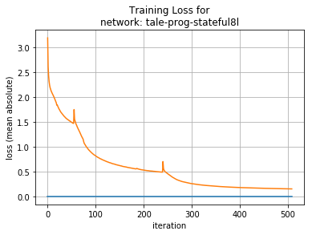
The audio generated manages word and sentence length sequences. Occasional babblings vary in pitch wildly, and overall the result seems maybe less comprehensible than the shorter 160 unit LSTM layer results.
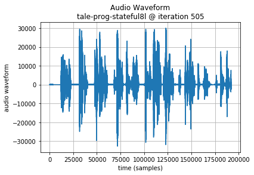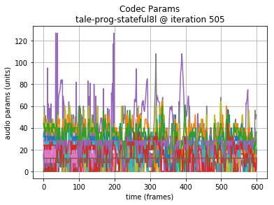
Additional Generated Audio provides longer sequences that allow additional comparison of the results. In these, the 320 unit LSTMs perform a little better to my ear.
Conclusions
A neural network architecture of deep LSTM layers has been shown to be able to learn to model speech-based audio when encoded by a codec designed specifically for vocal compression. When run as a feed-forward generator, the network manages to predict samples that track the original pace of the vocal performer with natural sounding pitch inflections over the course of sentences, and short term sequences that might reflect the structure of words.
Although we were unable to achieve a model that actually generated true words, the model could be considered to babble in a reasonably acceptable way.
Opportunities for Future Research
Listening to the corpus with the current Codec 2 compression rate (1300bps) reveals that the compression obscures many vocal phones significantly. In future we would attempt training a similar network with a higher bit-rate version of Codec 2. Although the codec data will be higher resolution and therefore may require more effort to learn, it is also possible that the resolution of data could result in less confusion between similar sounds and therefore make it easier for the model to flow to a more coherent next sound during prediction. From a qualitative standpoint, it is likely to also be better for human evaluation to understand the results.
Intuitively, it seems that the ability to evaluate loss not just on the next frame, but several frames ahead could help guide learning more rapidly. Although this may be considered double dipping from a formal standpoint, and increase complexity for learning with back propogation through time, understanding both the theoretical and practical implications of this deserve additional research.
Application of alternative neural network architectures should be considered in the future. Mixture Density Networks as used in Graves handwriting generation (ref: 2) and Glover musical instrument sound generation (ref: 4), based on the paper by Bishop (ref:15), seems to be worth evaluation. Similarly, HyperLSTM (ref: 14) and Diagonal LSTM (ref: 9) have shown some success in sequence generation and we would consider future research with these structures.
All References
- The Unreasonable Effectiveness of Recurrent Neural Networks
Andrej Karpathy - Generating Sequences With Recurrent Neural Networks
Alex Graves - Auto-Generating Clickbait With Recurrent Neural Networks
Lars Eidnes - Generating sound with recurrent neural networks
John Glover - Acoustic Modeling in Statistical Parametric Speech Synthesis - from HMM to LSTM-RNN
Heiga Zen - Deep Neural Networks for Acoustic Modeling in Speech Recognition
Geoffrey Hinton, Li Deng, Dong Yu, George Dahl, Abdel-rahman Mohamed, Navdeep Jaitly, Andrew Senior, Vincent Vanhoucke, Patrick Nguyen, Tara Sainath, and Brian Kingsbury - GRUV:Algorithmic Music Generation using Recurrent Neural Networks
Aren Nayebi and Matt Vitelli - Generative Adversarial Denoising Autoencoder for Face Completion
Avery Allen, Wenchen Li - Diagonal RNNs in Symbolic Music Modeling
Ellery Wulczyn, Clementine Jacoby - Long Short-Term Memory
Neural Computation, 9(8):1735–1780, 1997
S. Hochreiter and J. Schmidhuber - Softmax RNN for Short Text Classification
Ellery Wulczyn, Clementine Jacoby - Incorporating Nesterov Momentum into Adam
Timothy Dozat - Sequence to Sequence Learning with Neural Networks
Ilya Sutskever, Oriol Vinyals, Quoc V. Le - HyperNetworks
David Ha, Andrew Dai, Quoc V. Le - Mixture Density Networks
Christopher M. Bishop - GSM 06.10 “Full Rate Speech Transcoding”
- Codec 2 website
David Rowe - Babbler-rnn c2gen Git repository on Github
Additional Resources
Codec 2 Data Frame
For reference, each frame of Codec 2 data is represented as:
|
number of bits per parameter |
parameter type |
|
1,1,1,1 |
voiced flags for 4 (10ms) PCM ‘frames’ |
|
7 |
W0 (fundamental frequency, “pitch”) |
|
5 |
E (energy of W0) |
|
4,4,4,4,4,4,4,3,3,2 |
LSP (spectral magnitudes) |
Codec 2 Parameter Progression
A rapid graphical evaluation of the progression from one Codec 2 frame to the next was performed. The objective was to see the likely impact on audio output based on small errors in each value.
The charts each show a single Codec 2 parameter over a significant sample of the corpus. The charts show current value on the horizontal axis, against next value on vertical axis. This rapid visualisation shows how the progression from one frame to the next is generally clustered, although varies between parameters.
Fundamental frequency
The strong cluster around x=y follows an expectation that the primary vocal pitch does not rapidly fluctuate over time. Interestingly, at the lower end there is more variation.
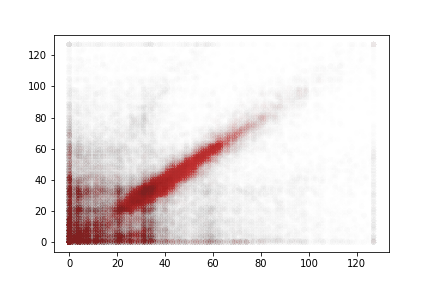
Energy
Variations in energy vary more at the top end of the range. It is not expected that errors here will lead to incomprehensible speech.
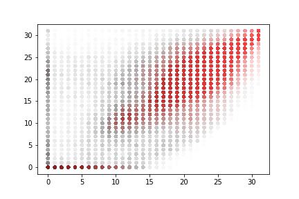
Spectral magnitudes
These vary significantly from one frame to the next. The parameters with the greatest range again follow x = y to a limited degree. Lower range parameters appear to have a greater spread of next values.

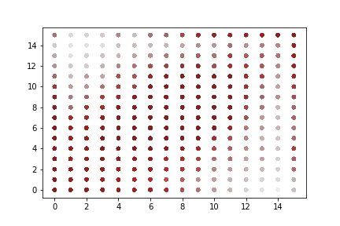
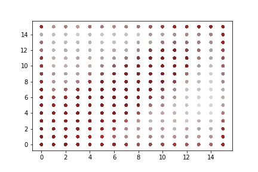
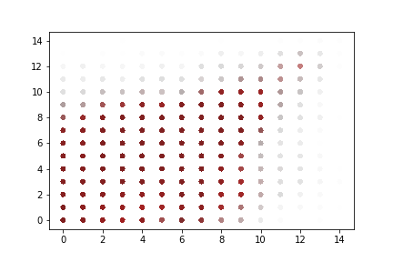
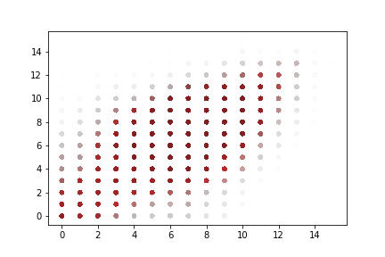
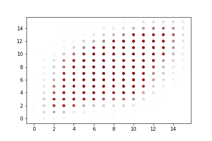
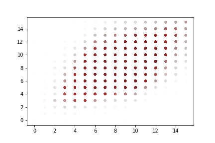
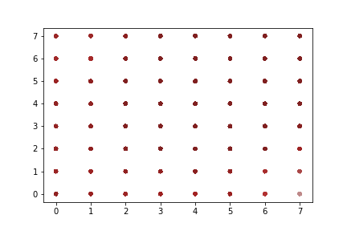
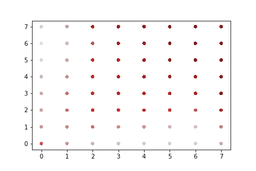
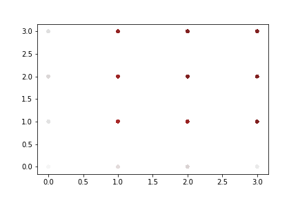
“Voiced” parameters
These do not show any consistent progression over time. Only one of the parameter charts is shown as they appear identical.
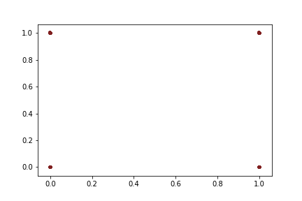
Additional Generated Audio
60 seconds of audio generated by a 3 x 320 unit LSTM. The initial 8 seconds are seed data from the original corpus.
60 seconds of audio generated by a 3 x 160 unit LSTM. The initial 8 seconds are seed data from the original corpus.